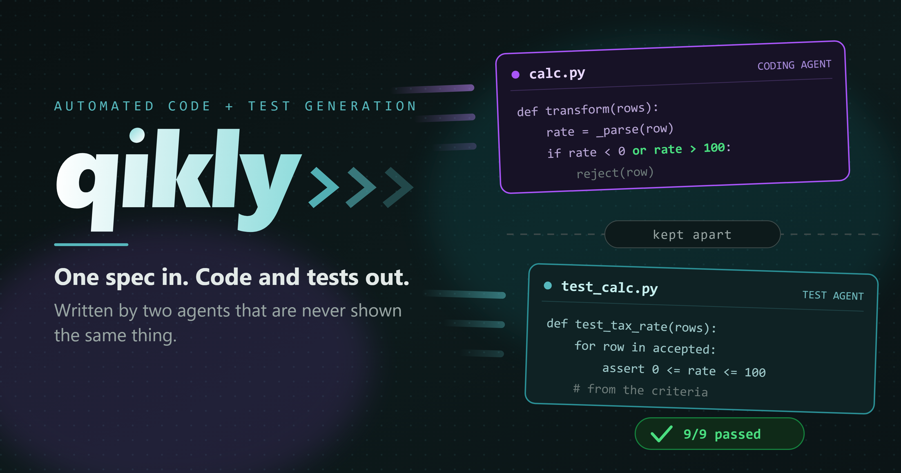
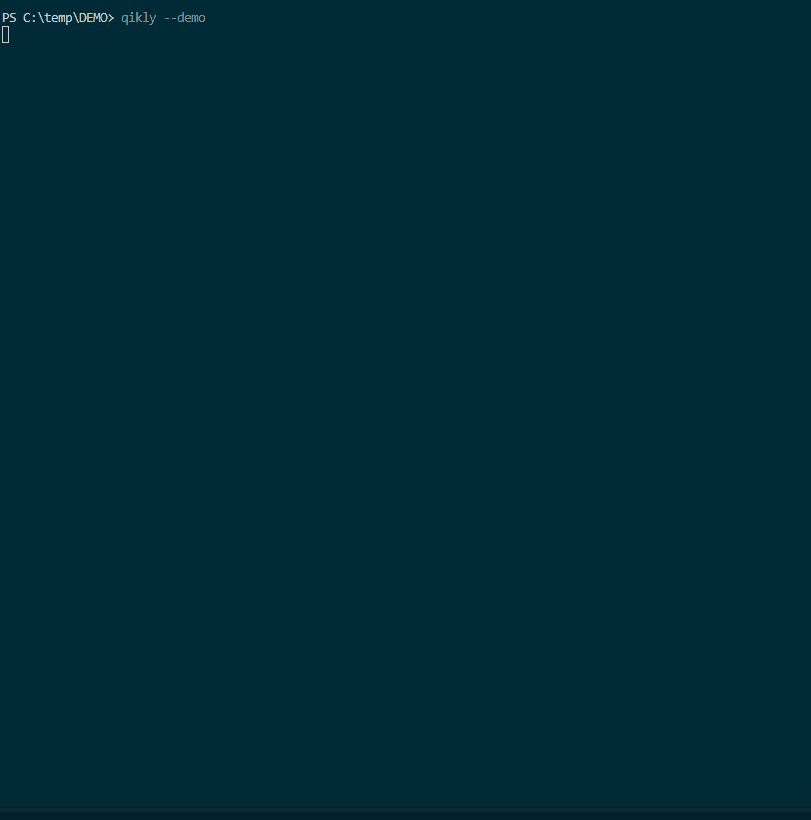

Independent test generation for AI-written code

When one AI writes both the code and its tests, a green suite proves little: the tests were written to pass. qikly splits the work between two agents. A test agent reads the acceptance criteria and writes the tests. A coding agent writes the code and never sees those criteria, so the tests can disagree with it.
In the run shown above, only the test agent was told a rate may not
exceed 100. The coding agent figured that bound out from a failing test
and added or rate > 100 itself, so the 9 of 9 is code
passing an acceptance bar it never saw.
That prints a bundled task twice, once as each agent
receives it, and the difference between them. No API key, no model call,
about a second. Then qikly --demo runs a task end to end with a
Gemini, OpenAI or Anthropic key for well under a cent, and
five
steps take your own module to a first run.
What it is for
What a Python module does with its inputs: data transforms and ETL steps, calculations, validation rules, merges and business logic. Integration, system and unit tests, in pytest, for small to mid-sized repositories.
User interfaces, performance, load, security or any other non-functional property, and it does not run end-to-end tests across services.
It fits most naturally where verification already has to be independent of the people who build the thing: automotive, medical devices, fintech and defence.
How it works
One task file holds the requirements, the interface and the acceptance criteria. The test agent reads all three and writes the integration and system tests before any code exists. The coding agent gets the same file with the criteria cut out, and works from failing tests until the suite passes.
"Just use one model for the code and another for the tests."
That helps a little. It does not fix the underlying issue: both models
still read the same criteria, so the code is still built to the standard
it is about to be judged by. Changing who types it does not change
what they were shown. qikly removes the criteria from the coding agent's
prompt, qikly --explain shows the cut, and a test fails the
build if any call site lets a criterion through.
"Doesn't a failing test give the criteria away?" It shows the coding agent that one test, its source and its error, and the test often states the rule it checks. It cannot change a test already written: the integration and system suites exist before any code does, so what the agent learns from a failure can shape the code, never the bar.
See it run

qikly --demo run, unedited. The criteria
are withheld, the suites are generated, a test fails, a patch lands, and
it goes green. 38 seconds on gemini-3.5-flash-lite, not sped up.Start
qikly --score-code your_module.py --score-tests tests/ checks
a suite you already have by planting faults in the code, free and with no
model call.qikly --scaffold your_module.py writes a task file from code
you already have, for you to fill in the requirements and criteria.qikly --init starts a task from nothing.qikly --install-skill teaches Claude Code, Gemini CLI, Codex
or Cursor how to drive qikly.Every command, by what you already have, and the design write-up: the case, how well it works, with the measured results and how it is built.
The separation this tool enforces is ordinary practice in safety-critical engineering, where verification is required to be independent of implementation as part of a V&V (Verification & Validation) methodology for testing. This library's author worked in that setting on General Motors' autonomous vehicle program before building this toolset.